The Camp
A 10×10 false-outdoor refuge at (25,8)–(34,17): cool twilight sky, worn earth, patched canvas, salvaged timber, warm fires, and nine visibly occupied adventurer figures. Branch agent/floor1-camp; not merged.
False-sky P0: passed. Existing ceiling casting carries the illusion without renderer architecture changes. Every gameplay image below is unmodified raw production-preview output.
A. False-sky prototype
The low-frequency navy field reads as dark open sky at first glance. Its faint ceiling projection and three irregular star features remain the restrained second-look clue. No exposure correction is used.
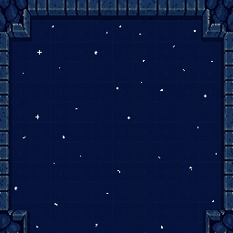
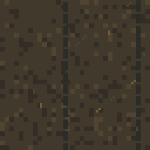
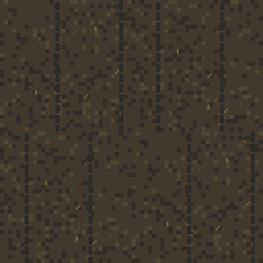
RAW GAMEPLAY · sightline gate
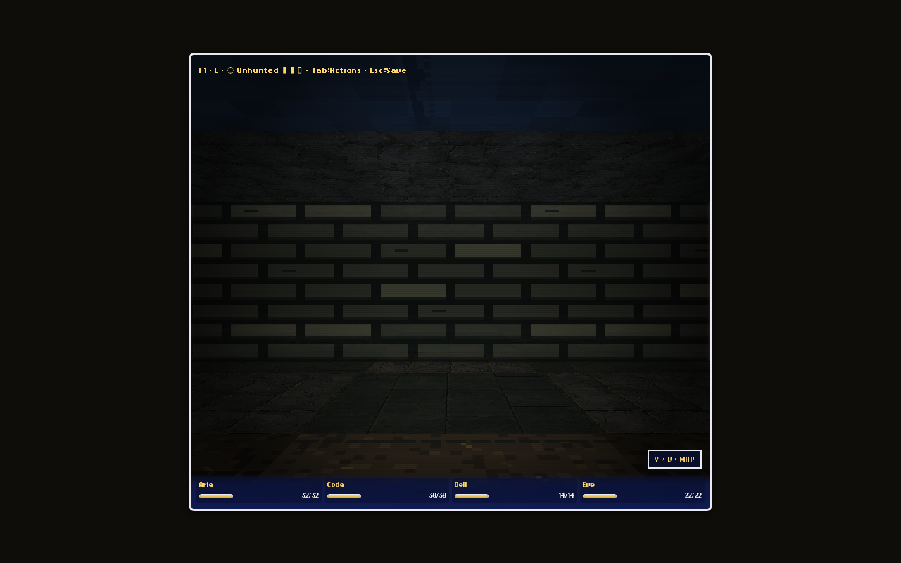
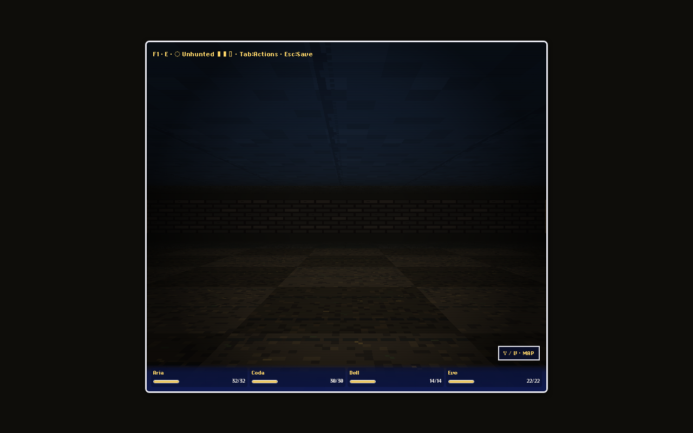
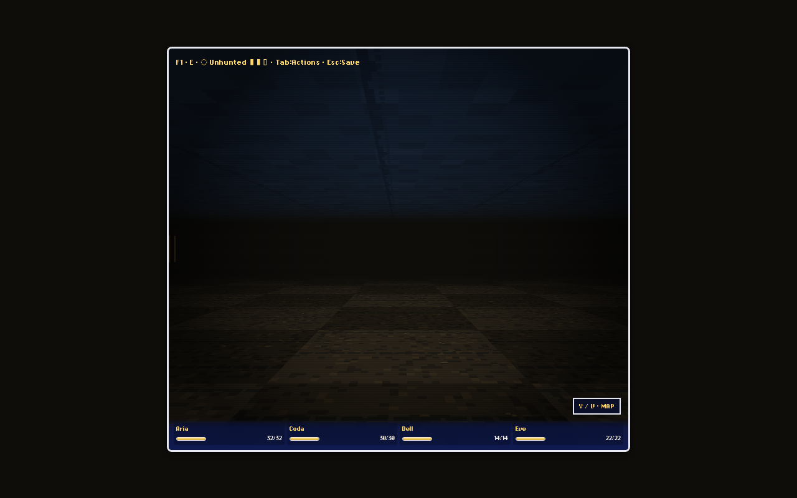
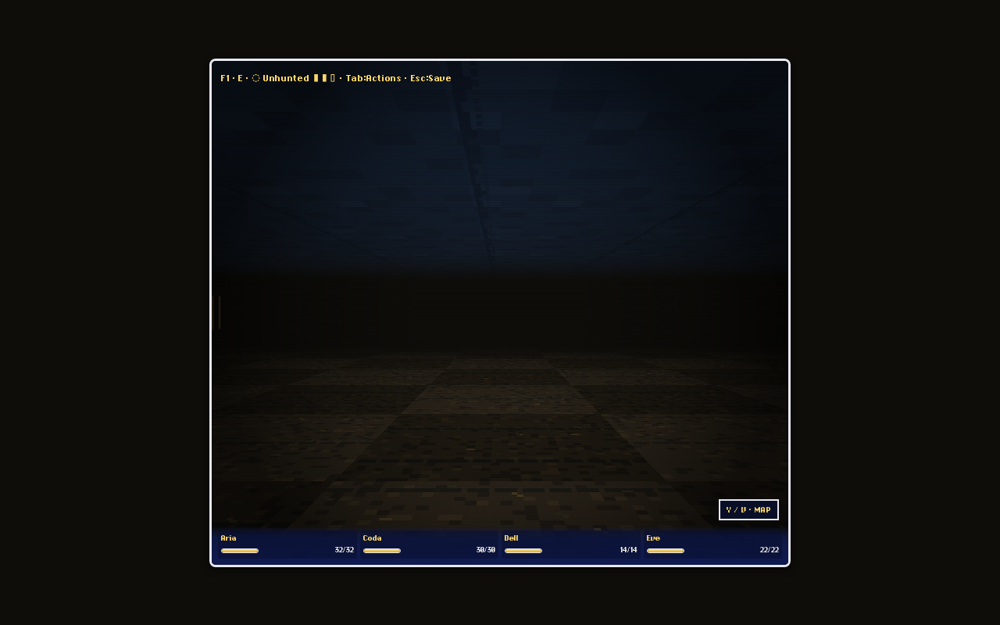
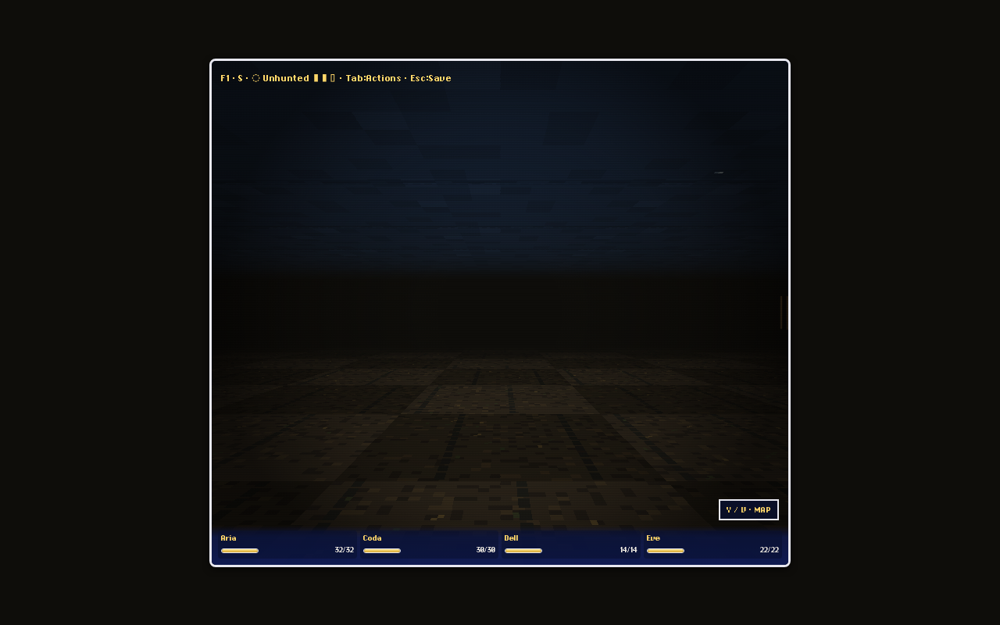
B. Production materials
PixelLab's edited masonry is the perimeter base. Renderer-tested deterministic sky and dirt outperformed generated scene-like texture candidates and remain frozen production art.
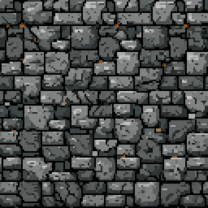
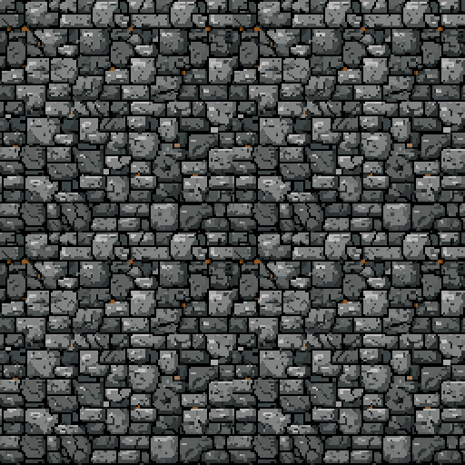
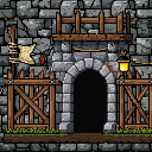
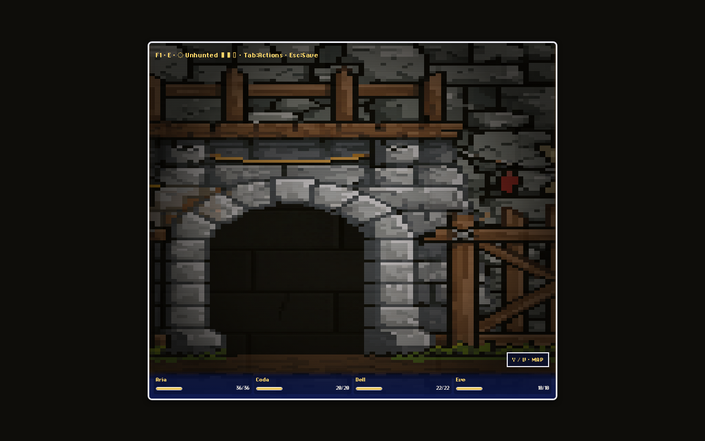
C. Hero environmental objects
Isolated shipping sources are shown nearest-neighbor enlarged. Each is an existing mapSprites billboard; the gate is the existing full-face doorFeature primitive.
RAW GAMEPLAY · actual renderer
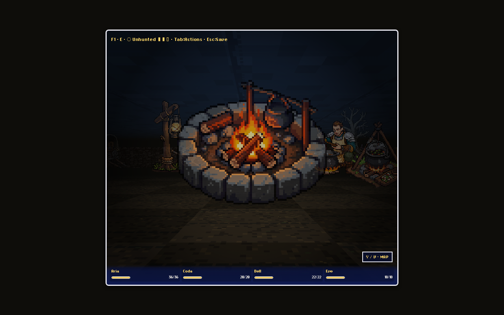
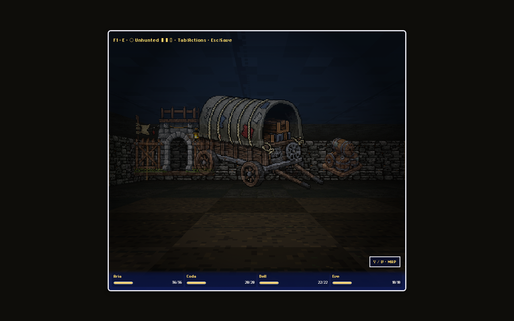
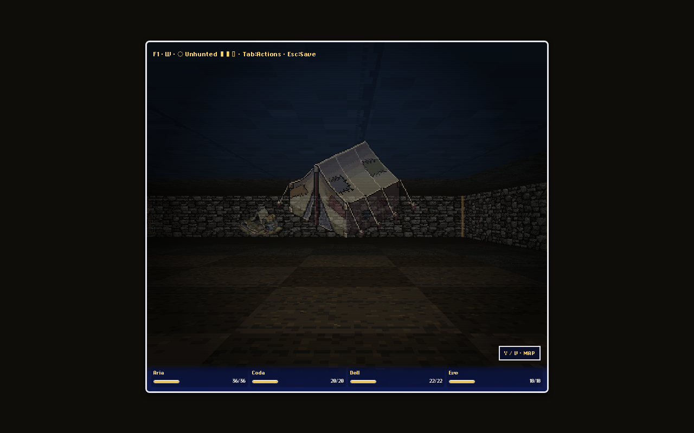
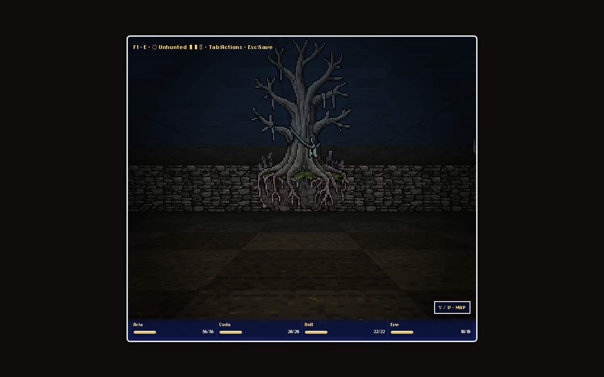
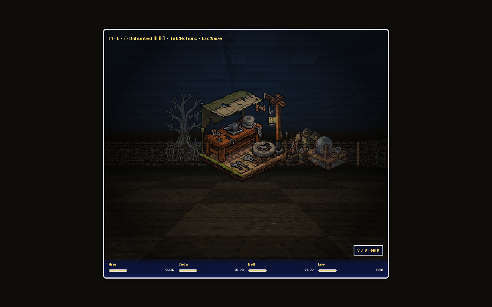
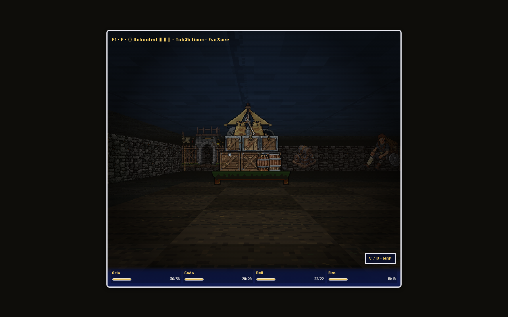
The distant fire in the reveal and the close fire above provide the multiple-distance check for the central anchor. The central and cross-room walkthrough views below verify the remaining landmarks as a combined long-distance composition.
D. Supporting props
Twelve accepted practical objects. The collapsed-tent candidate is parked because it generated as another intact tent; the generic heraldic banner was rejected.
E. Ambient people
Seven environmental scenes depict nine inhabitants. They are intentionally non-interactive world art: cards, map study, repair, sleep, cooking, watch, and injury communicate habitation without twelve dialogue panels.
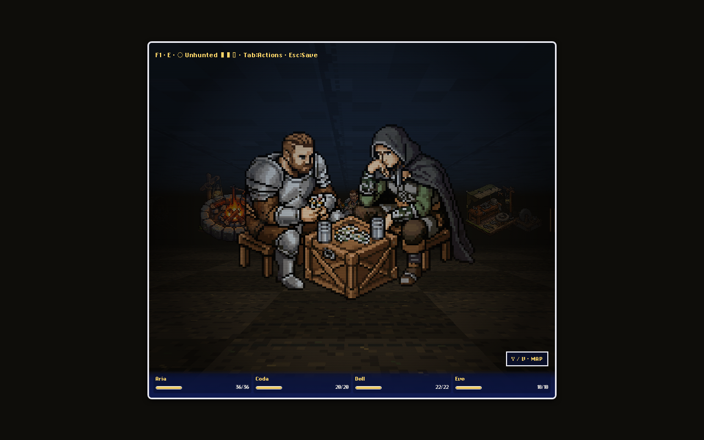
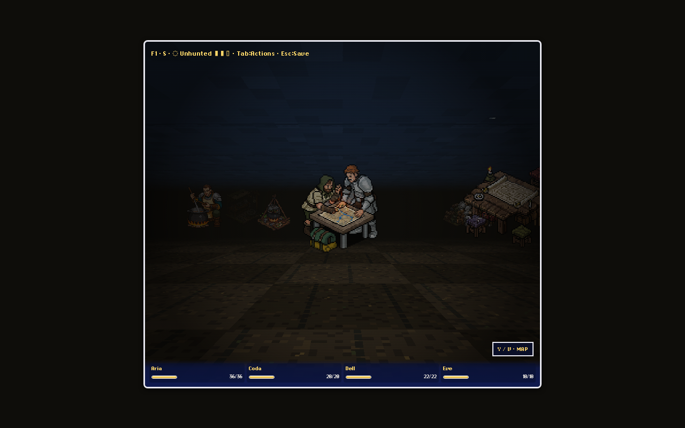
F. Final 10×10 layout
| Region | Role |
|---|---|
| West / entrance | sleeping area, watch, fence, small tent |
| North | pavilion, expedition table, supply mound, wagon, checkpoint |
| Center | communal fire and intentionally open circulation |
| South-east | dead tree, smith, grindstone, armor and weapon racks |
| Far east edge | root-curtain overlap: the quiet false-sky clue |
27 meaningful map-sprite placements occupy 27% of the 100-cell heart. The remaining negative space preserves paths, axial/diagonal sightlines, and room around service landmarks.
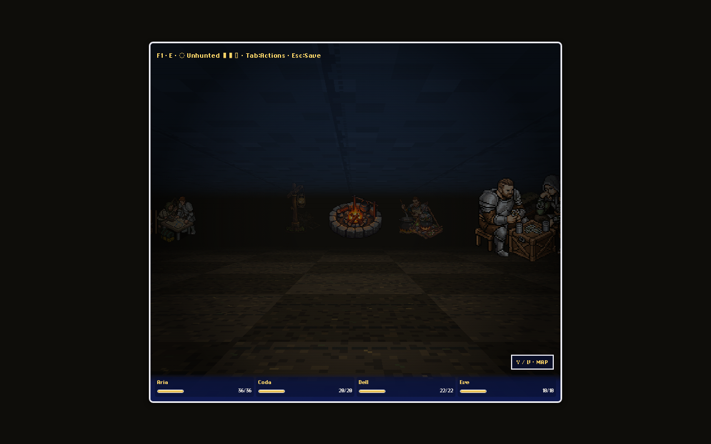
G. Persistent walkthrough
Generated by scripts/playtests/camp-walkthrough.mjs against a production-style Vite preview. All captures are raw gameplay.
H. Performance
The persistent measurement is scripts/playtests/camp-performance.mjs; raw results are in performance.json. It runs 180 frames at `(25,12)` facing east, then temporarily duplicates and shifts all 27 Camp placements in memory. The authored floor remains unchanged. Browser errors: zero. The renderer currently considers all map sprites before projection/occlusion; there is no pre-projection distance-reject stage to report.